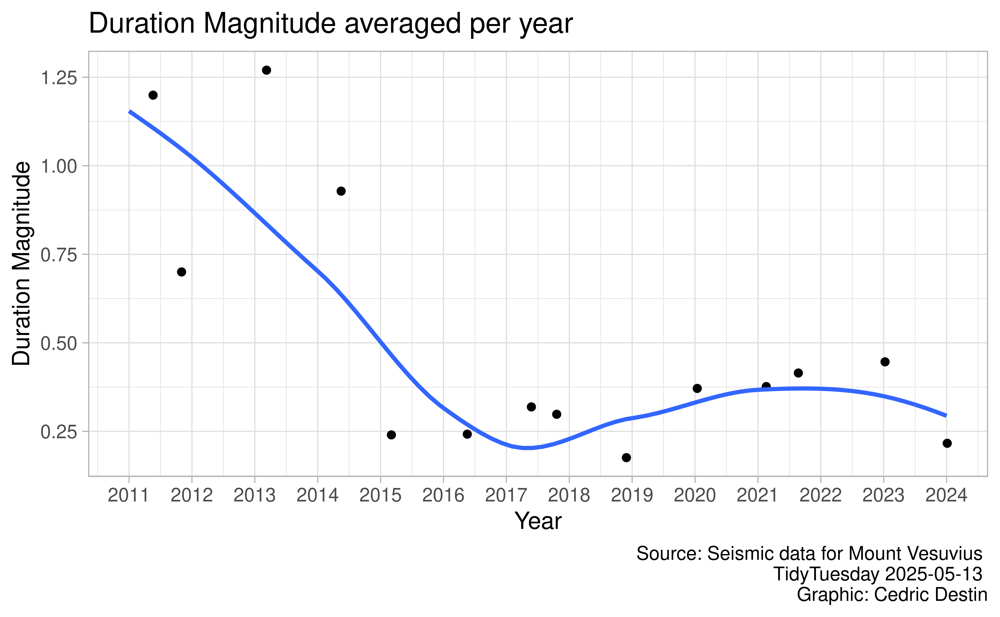
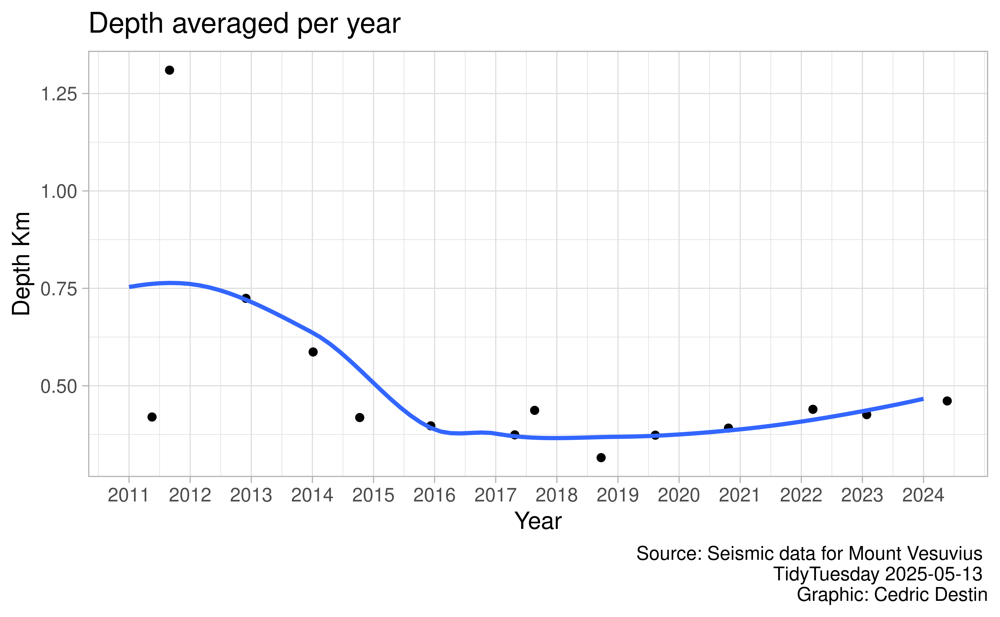
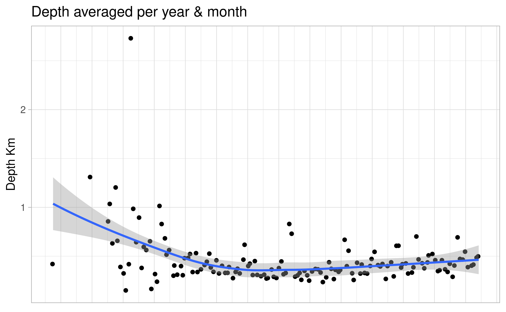
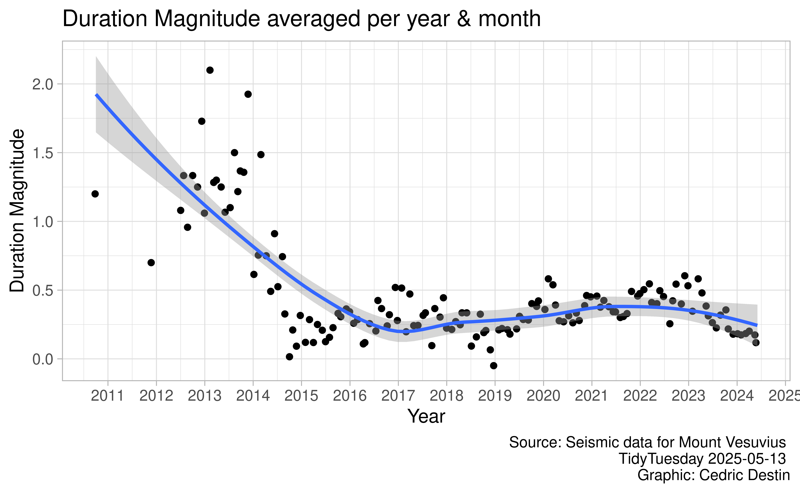
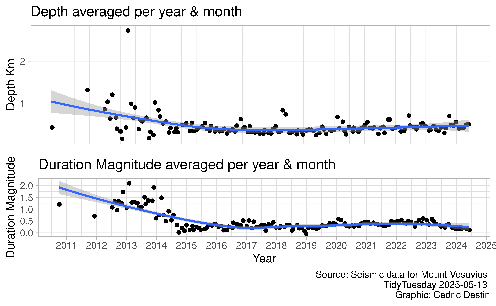
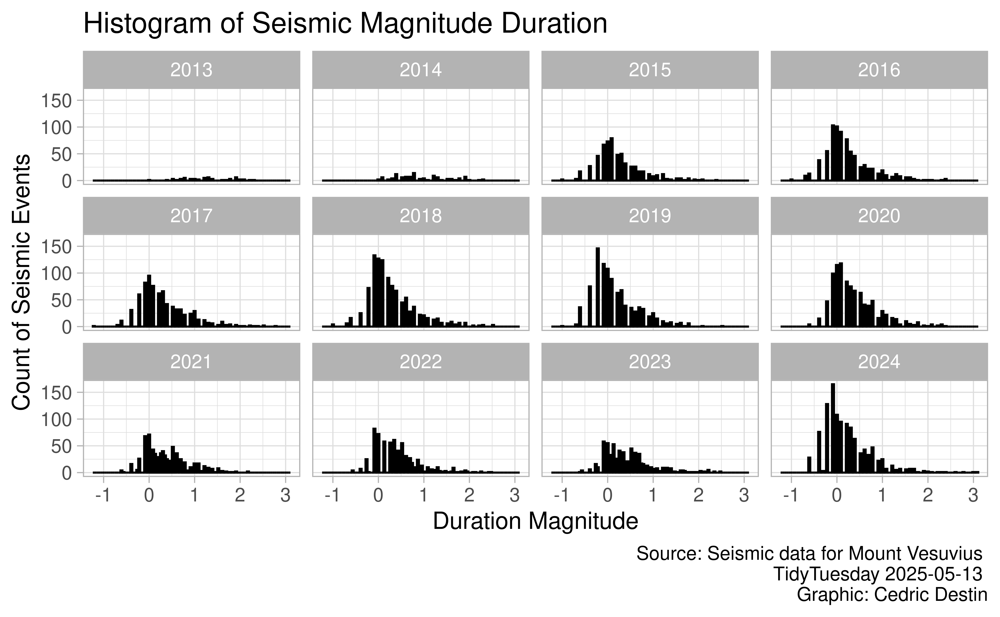
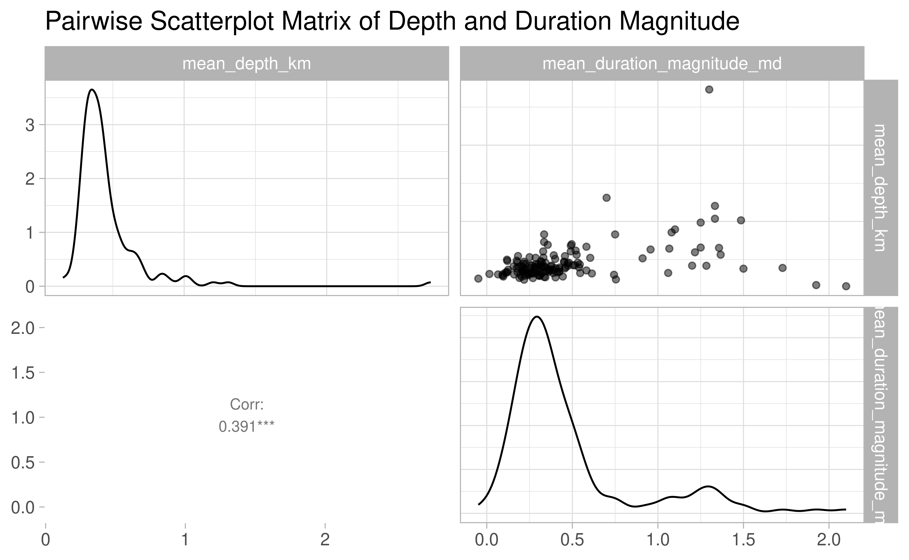

# use this line for installing/loadingpacman::p_load(tidyverse, glue, scales, openintro, gridExtra, ggrepel, ggmap, ggridges, dsbox, devtools, fs, janitor, here, dplyr, ggdist, distributional, elevatr, GGally)
Installing package into '/home/wscott/R/x86_64-pc-linux-gnu-library/4.5'
(as 'lib' is unspecified)
also installing the dependencies 'distributional', 'quadprog'
ggdist installed
Installing package into '/home/wscott/R/x86_64-pc-linux-gnu-library/4.5'
(as 'lib' is unspecified)
also installing the dependency 'ggstats'
GGally installed
ggplot2::theme_set(ggplot2::theme_light(base_size =12))options(width =65)knitr::opts_chunk$set(fig.width =7, # 7" widthfig.asp =0.618, # the golden ratiofig.retina =3, # dpi multiplier for displaying HTML output on retinafig.align ="center", # center align figuresdpi =300# higher dpi, sharper image)save_figs =TRUE
Plan out layer mappings
The following libraries / functions will be used in order to answer Question 1, “How have the frequency and depth of seismic events at Mount Vesuvius changed over time?”
geom_point:
- Creating a scatter plot of the seismic events (depth and duration-magnitude) over time
geom_line:
Creating a scatter plot of the seismic events (depth and duration-magnitude) over time
geom_bar:
View the frequency of the seismic events aggregated per year or year, month
plot_1 <-ggplot(aggregated_data, aes(x = year, y = mean_duration_magnitude_md)) +geom_jitter() +geom_smooth(method ="loess", se =FALSE) +scale_x_continuous(breaks =pretty(aggregated_data$year, n =10))+labs(title ="Duration Magnitude averaged per year", caption ="Source: Seismic data for Mount Vesuvius \n TidyTuesday 2025-05-13 \n Graphic: Cedric Destin",x ="Year", y ="Duration Magnitude")plot_1
`geom_smooth()` using formula = 'y ~ x'

if (save_figs) {ggsave("images/duration_magnitude_by_year.png", plot_1)}
Saving 7 x 4.33 in image
`geom_smooth()` using formula = 'y ~ x'
plot_2 <-ggplot(aggregated_data, aes(x = year, y = mean_depth_km)) +geom_jitter() +geom_smooth(method ="loess", se =FALSE) +scale_x_continuous(breaks =pretty(aggregated_data$year, n =10)) +labs(title ="Depth averaged per year", caption ="Source: Seismic data for Mount Vesuvius \n TidyTuesday 2025-05-13 \n Graphic: Cedric Destin",x ="Year", y ="Depth Km")plot_2
`geom_smooth()` using formula = 'y ~ x'

if (save_figs) {ggsave("images/depth_by_year.png", plot_2)}
Saving 7 x 4.33 in image
`geom_smooth()` using formula = 'y ~ x'
aggregated_data_2$date <-as.Date(with(aggregated_data_2, paste(year, month, "01", sep ="-")))plot_3 <-ggplot(aggregated_data_2, aes(x = date, y = mean_depth_km)) +geom_jitter() +geom_smooth(method ="loess", se =TRUE) +scale_x_date(date_labels ="%Y", date_breaks ="12 month") +labs(title ="Depth averaged per year & month", caption ="Source: Seismic data for Mount Vesuvius \n TidyTuesday 2025-05-13 \n Graphic: Cedric Destin",x ="Year", y ="Depth Km")plot_3
`geom_smooth()` using formula = 'y ~ x'

if (save_figs) {ggsave("images/depth_by_year_month.png", plot_3)}
Saving 7 x 4.33 in image
`geom_smooth()` using formula = 'y ~ x'
plot_4 <-ggplot(aggregated_data_2, aes(x = date, y = mean_duration_magnitude_md)) +geom_jitter() +geom_smooth(method ="loess", se =TRUE) +scale_x_date(date_labels ="%Y", date_breaks ="12 month") +labs(title ="Duration Magnitude averaged per year & month", caption ="Source: Seismic data for Mount Vesuvius \n TidyTuesday 2025-05-13 \n Graphic: Cedric Destin",x ="Year", y ="Duration Magnitude")plot_4
`geom_smooth()` using formula = 'y ~ x'

if (save_figs) {ggsave("images/duration_magnitude_by_year_month.png", plot_4)}
Saving 7 x 4.33 in image
`geom_smooth()` using formula = 'y ~ x'
plot_5 <-ggplot(filter(vesuvius_data_filtered, year >=2013), aes(x = depth_km)) +geom_histogram(fill ="skyblue", color ="black", bins =100) +labs(title ="Histogram of Seismic Depth", x ="Depth (km)", y ="Count of Seismic Events", caption ="Source: Seismic data for Mount Vesuvius \n TidyTuesday 2025-05-13 \n Graphic: Cedric Destin")+facet_wrap(~ year)plot_5

if (save_figs) {ggsave("images/depth_hist.png", plot_5)}
Saving 7 x 4.33 in image
plot_6 <-ggplot(filter(vesuvius_data_filtered, year >=2013), aes(x = duration_magnitude_md)) +geom_histogram(fill ="skyblue", color ="black", bins =100) +labs(title ="Histogram of Seismic Magnitude Duration", x ="Duration Magnitude", y ="Count of Seismic Events", caption ="Source: Seismic data for Mount Vesuvius \n TidyTuesday 2025-05-13 \n Graphic: Cedric Destin") +facet_wrap(~ year)plot_6

if (save_figs) {ggsave("images/magnitude_duration_hist.png", plot_6)}
Saving 7 x 4.33 in image
# p1 <- ggplot(filter(vesuvius_data_filtered, year == 2013), aes(x = depth_km)) +# geom_histogram(fill = "skyblue", color = "black", bins = 100) +# labs(title = "Histogram of your_column", x = "your_column", y = "Count")# p2 <- ggplot(filter(vesuvius_data_filtered, year == 2014), aes(x = depth_km)) +# geom_histogram(fill = "skyblue", color = "black", bins = 100) +# labs(title = "Histogram of your_column", x = "your_column", y = "Count")# p3 <- ggplot(filter(vesuvius_data_filtered, year == 2015), aes(x = depth_km)) +# geom_histogram(fill = "skyblue", color = "black", bins = 100) +# labs(title = "Histogram of your_column", x = "your_column", y = "Count")# p4 <- ggplot(filter(vesuvius_data_filtered, year == 2016), aes(x = depth_km)) +# geom_histogram(fill = "skyblue", color = "black", bins = 100) +# labs(title = "Histogram of your_column", x = "your_column", y = "Count")# p5 <- ggplot(filter(vesuvius_data_filtered, year == 2017), aes(x = depth_km)) +# geom_histogram(fill = "skyblue", color = "black", bins = 100) +# labs(title = "Histogram of your_column", x = "your_column", y = "Count")# p6 <- ggplot(filter(vesuvius_data_filtered, year == 2018), aes(x = depth_km)) +# geom_histogram(fill = "skyblue", color = "black", bins = 100) +# labs(title = "Histogram of your_column", x = "your_column", y = "Count")# p7 <- ggplot(filter(vesuvius_data_filtered, year == 2019), aes(x = depth_km)) +# geom_histogram(fill = "skyblue", color = "black", bins = 100) +# labs(title = "Histogram of your_column", x = "your_column", y = "Count")# p8 <- ggplot(filter(vesuvius_data_filtered, year == 2020), aes(x = depth_km)) +# geom_histogram(fill = "skyblue", color = "black", bins = 100) +# labs(title = "Histogram of your_column", x = "your_column", y = "Count")# p9 <- ggplot(filter(vesuvius_data_filtered, year == 2021), aes(x = depth_km)) +# geom_histogram(fill = "skyblue", color = "black", bins = 100) +# labs(title = "Histogram of your_column", x = "your_column", y = "Count")# p10 <- ggplot(filter(vesuvius_data_filtered, year == 2022), aes(x = depth_km)) +# geom_histogram(fill = "skyblue", color = "black", bins = 100) +# labs(title = "Histogram of your_column", x = "your_column", y = "Count")# p11 <- ggplot(filter(vesuvius_data_filtered, year == 2023), aes(x = depth_km)) +# geom_histogram(fill = "skyblue", color = "black", bins = 100) +# labs(title = "Histogram of your_column", x = "your_column", y = "Count")# p12 <- ggplot(filter(vesuvius_data_filtered, year == 2024), aes(x = depth_km)) +# geom_histogram(fill = "skyblue", color = "black", bins = 100) +# labs(title = "Histogram of your_column", x = "your_column", y = "Count")# grid.arrange(p1, p2, p3, p4, p5, p6, p7, p8, p9, p10, p11, p12, ncol = 3)
# p1 <- ggplot(filter(vesuvius_data_filtered, year == 2013), aes(x = duration_magnitude_md)) +# geom_histogram(fill = "skyblue", color = "black", bins = 100) +# labs(title = "Histogram of your_column", x = "your_column", y = "Count")# p2 <- ggplot(filter(vesuvius_data_filtered, year == 2014), aes(x = duration_magnitude_md)) +# geom_histogram(fill = "skyblue", color = "black", bins = 100) +# labs(title = "Histogram of your_column", x = "your_column", y = "Count")# p3 <- ggplot(filter(vesuvius_data_filtered, year == 2015), aes(x = duration_magnitude_md)) +# geom_histogram(fill = "skyblue", color = "black", bins = 100) +# labs(title = "Histogram of your_column", x = "your_column", y = "Count")# p4 <- ggplot(filter(vesuvius_data_filtered, year == 2016), aes(x = duration_magnitude_md)) +# geom_histogram(fill = "skyblue", color = "black", bins = 100) +# labs(title = "Histogram of your_column", x = "your_column", y = "Count")# p5 <- ggplot(filter(vesuvius_data_filtered, year == 2017), aes(x = duration_magnitude_md)) +# geom_histogram(fill = "skyblue", color = "black", bins = 100) +# labs(title = "Histogram of your_column", x = "your_column", y = "Count")# p6 <- ggplot(filter(vesuvius_data_filtered, year == 2018), aes(x = duration_magnitude_md)) +# geom_histogram(fill = "skyblue", color = "black", bins = 100) +# labs(title = "Histogram of your_column", x = "your_column", y = "Count")# p7 <- ggplot(filter(vesuvius_data_filtered, year == 2019), aes(x = duration_magnitude_md)) +# geom_histogram(fill = "skyblue", color = "black", bins = 100) +# labs(title = "Histogram of your_column", x = "your_column", y = "Count")# p8 <- ggplot(filter(vesuvius_data_filtered, year == 2020), aes(x = duration_magnitude_md)) +# geom_histogram(fill = "skyblue", color = "black", bins = 100) +# labs(title = "Histogram of your_column", x = "your_column", y = "Count")# p9 <- ggplot(filter(vesuvius_data_filtered, year == 2021), aes(x = duration_magnitude_md)) +# geom_histogram(fill = "skyblue", color = "black", bins = 100) +# labs(title = "Histogram of your_column", x = "your_column", y = "Count")# p10 <- ggplot(filter(vesuvius_data_filtered, year == 2022), aes(x = duration_magnitude_md)) +# geom_histogram(fill = "skyblue", color = "black", bins = 100) +# labs(title = "Histogram of your_column", x = "your_column", y = "Count")# p11 <- ggplot(filter(vesuvius_data_filtered, year == 2023), aes(x = duration_magnitude_md)) +# geom_histogram(fill = "skyblue", color = "black", bins = 100) +# labs(title = "Histogram of your_column", x = "your_column", y = "Count")# p12 <- ggplot(filter(vesuvius_data_filtered, year == 2024), aes(x = duration_magnitude_md)) +# geom_histogram(fill = "skyblue", color = "black", bins = 100) +# labs(title = "Histogram of your_column", x = "your_column", y = "Count")# grid.arrange(p1, p2, p3, p4, p5, p6, p7, p8, p9, p10, p11, p12, ncol = 3)
# Replace 'aggregated_data', 'x_column', and 'y_column' with your data and columnsplot_7 <-ggpairs(aggregated_data_2, columns =c("mean_depth_km", "mean_duration_magnitude_md"),upper =list(continuous =wrap("points", alpha =0.5)),lower =list(continuous =wrap("cor", size =3)),title ="Pairwise Scatterplot Matrix of Depth and Duration Magnitude")plot_7

if (save_figs) {ggsave("images/pairwise_plot.png", plot_7)}